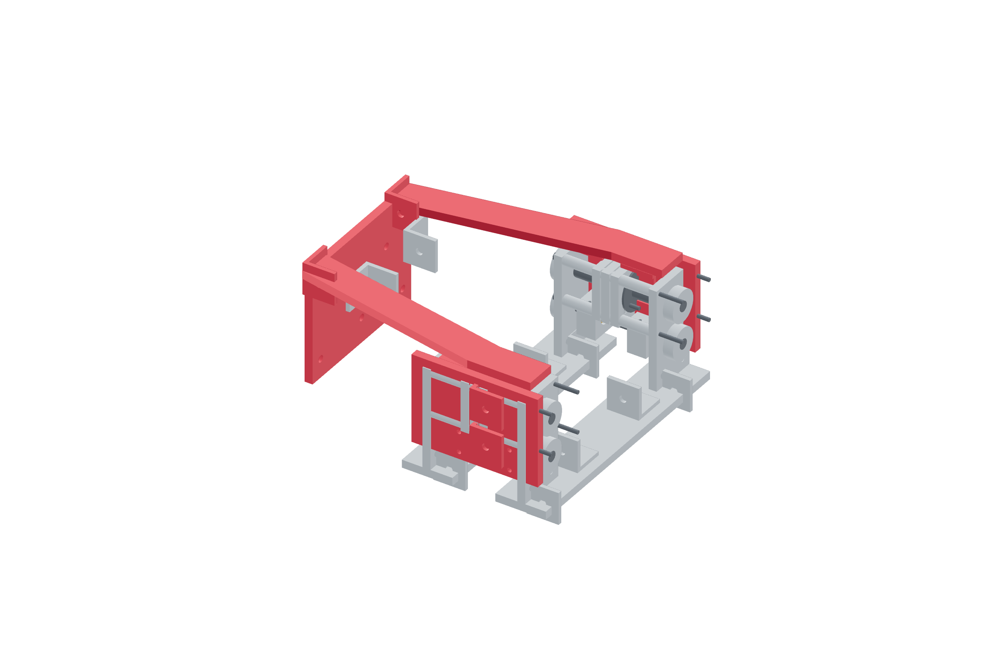

Payload / captured crash mount93 / 179
Join the tapered output carriers
The paired metal carriers join the axial pod outputs to the registered magnetic backplate. Their rear taper clears the fixed pitch frame.
Add2 crash-output-wall · left / right crash-carrier · crash-magnet-back · metal angles and through-bolts · 8 M3 × 40 lower-guide bolts / washers / locking nuts
Tools / setupActual-size contour templates · square · hex keys · support

- Identify the left and right contours; keep the tapered rear inside the pitch side plates.
- Join each lower bronze guide block and upper shuttle to its metal output wall; attach the tapered carrier to that moving wall.
- Start the rear magnetic backplate joints and square it before seating opposite fasteners.
- Move the captured output through both small axial signs by hand; no bracket may bridge from output to a fixed pod shoulder.
Ready when
The output moves through its captured path and the paired carriers remain rigid, with no fixed-frame bypass or pitch-frame contact. A bypass or contacting taper defeats release. Correct the metal contour/joint placement before fitting the seated gun tray.